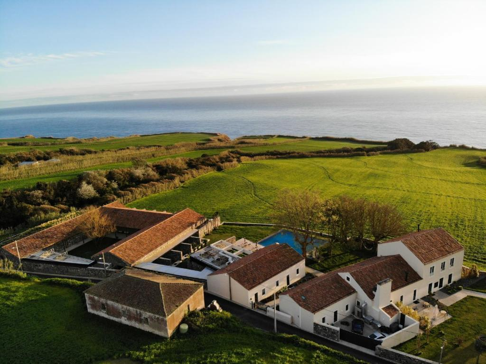
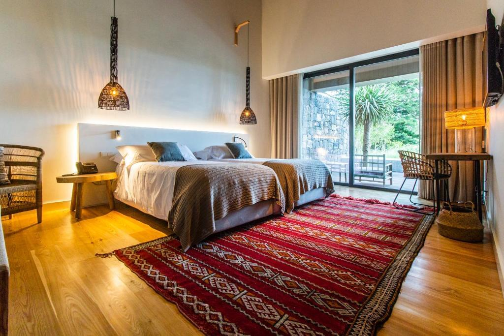
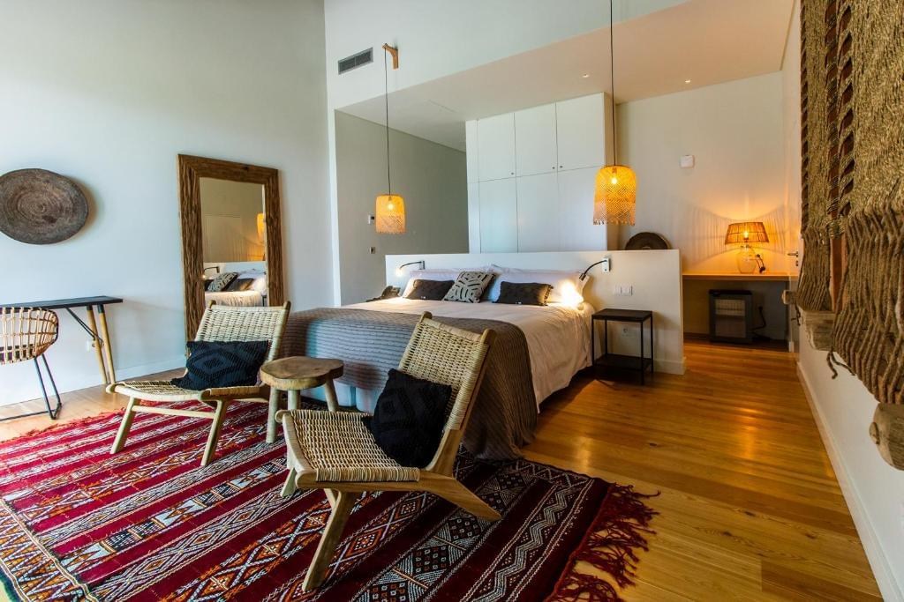
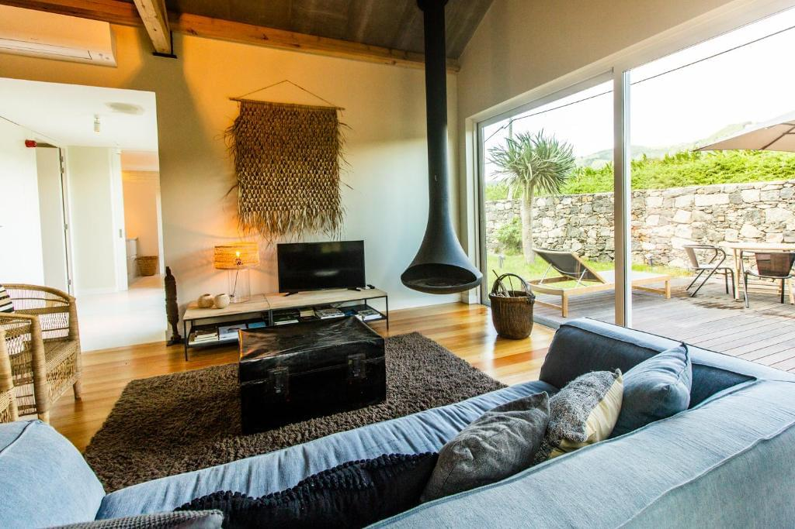
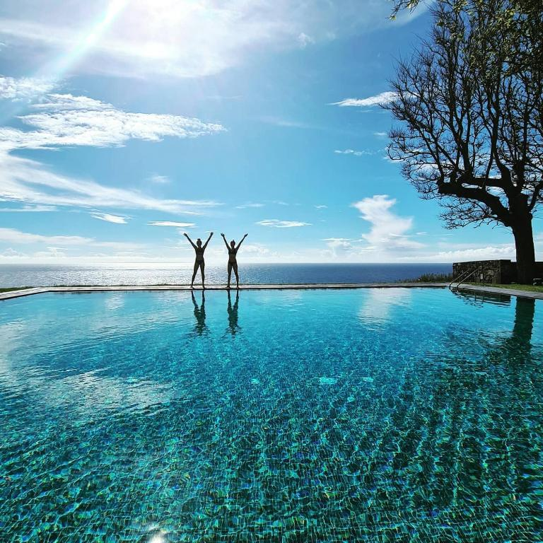
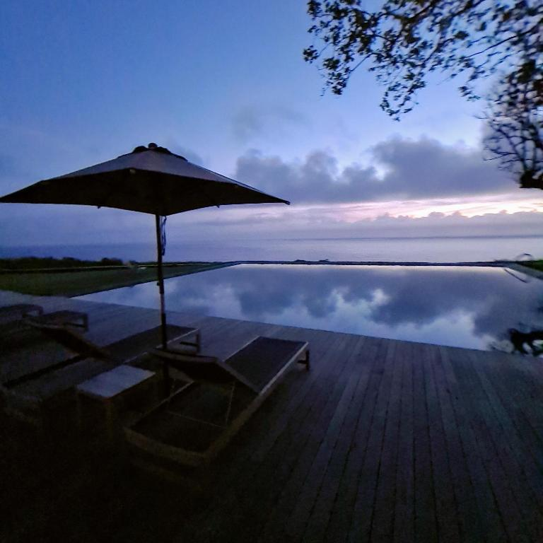
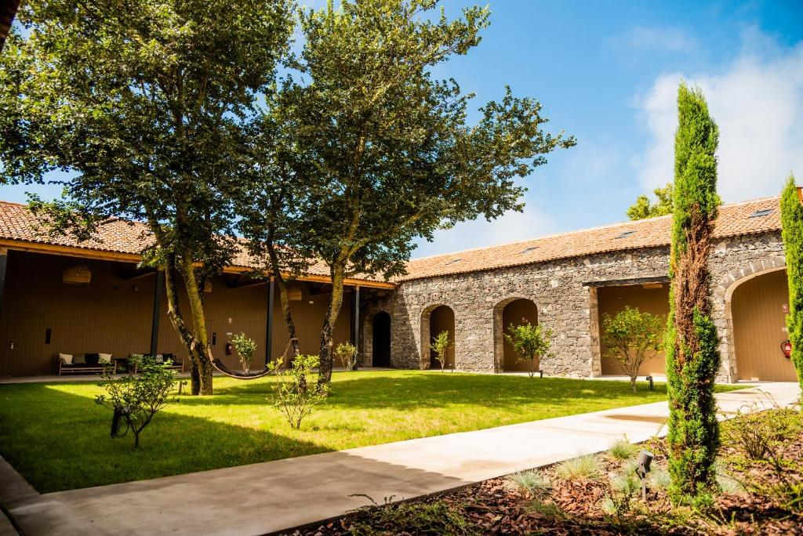
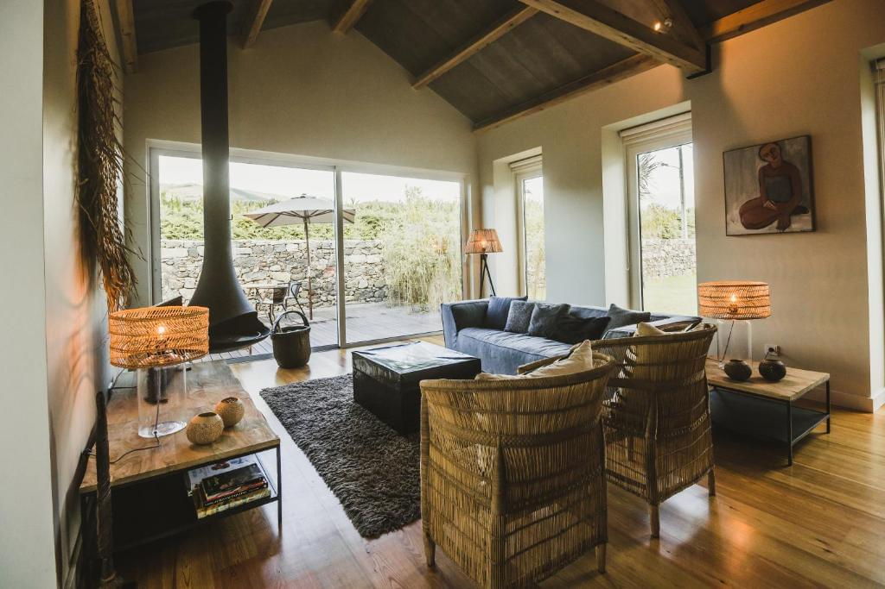
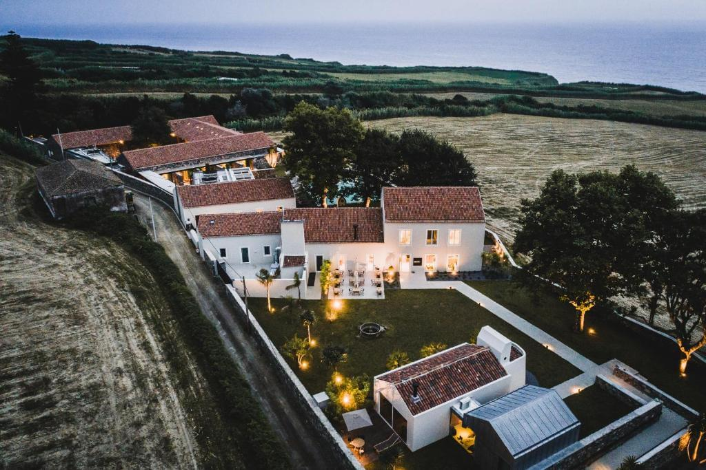
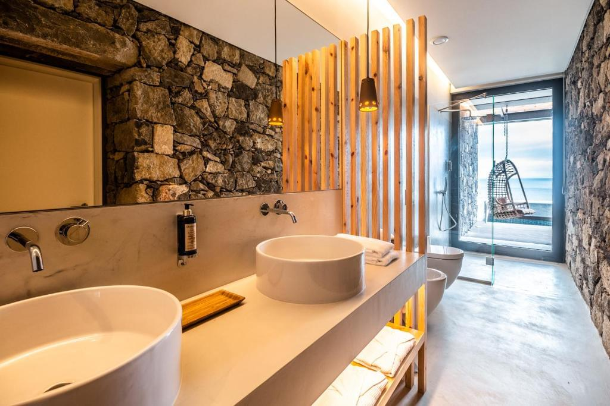

Nossos jogos são destinados ao público ADULTO com mais de 18 anos. Clique em Aceito para confirme sua idade.

O SENSI Azores Nature and SPA
O SENSI Azores Nature and SPA é um hotel e spa resort único, localizado na bela ilha de Santa Maria, no arquipélago dos Açores, em Portugal. Este hotel oferece aos hóspedes a oportunidade de desfrutar do isolamento na beleza natural, de tratamentos de spa e de uma variedade de actividades ao ar livre.
Quartos
Os quartos e suites do hotel estão decorados num estilo moderno e oferecem conforto e aconchego aos hóspedes.
O hotel tem um restaurante que serve cozinha local e internacional, bem como bares com bebidas e cocktails.
O hotel está localizado num belo cenário natural, rodeado por colinas verdes, o mar e praias vulcânicas.



Vantagens
Ótimo café da manhã
Estacionamento grátis
Restaurante
Spa e centro de bem-estar
Transferir
Wifi grátis
Quartos para não fumantes
Quartos familiares
Spa


O SENSI Azores Nature and SPA dispõe de um centro de spa com uma variedade de tratamentos, massagens e banhos termais.


O hotel organiza uma variedade de actividades para os hóspedes, tais como ciclismo, caminhadas, mergulho e outras actividades ao ar livre.


O SENSI Azores Nature and SPA adere a práticas ambientalmente sustentáveis e está empenhado em preservar a beleza natural da ilha.